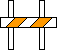

To introduce one of the new letters, we present a Russian Alphabet Picture Drama (a play in one act).
|
At the right is a picture of a barricade. Whenever you see a barricade, you naturally think of no entry. |
 |
| At the right is a Russian letter that looks very much like a barricade, and it has the sound of the first consonant in the words no entry. | Н |
нетWhen you see the letter н, whose Russian name is pronounced “en,” make sure you think of the “no entry” barricade—if you don’t, you’re playing with the wrong rules!
Here are the individual letters that make up the word:
| Capital | Small | Sounds like |
|---|---|---|
| Н | н | n in no |
| Е | е | ye in yet |
| Т | т | t in top |
Let’s see a few words that you can put together with the letters that you now know.